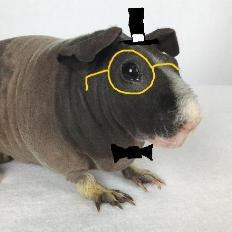

Qui est -il?
Il s'appelle Annam TRAN, il a 20 ans, d'origine Vietnamiens et il est actuellement étudiant en A2 CDI à l'IIM. Il vit, seul, actuellement à Paris, dans le 13ème arrondissement. Il est le fils d'un développeur fullstack en freelance dont il a acquiérit des compétences de ce dernier.

Annam TRAN
Photo de profil d'Annam Tran sur github représentant un cochon d'inde
Son profil github : Cliquez-ici
Histoire de sa vie
Sa jeunesse
Dans sa jeunesse, il vivait à Villeneuve-Saint-George avec toute sa famille. Son père et lui partageait la passion d'un jeu : Starcraft. Former et entraîner par son père, il devint très vite brillant sur ce jeu. Mais se lassant de ses victoires, il finit par laisser de côté ce jeu pendant un temps. Intégrant un milieu scolaire privée tout au long de sa vie, il a su se parfaire dans ses études. Brevet, Bac... cela lui réussissait. Une fois le lycée finit (Lycée Saint-Charles d'Athis-Mons) et le bac en poche, il poursuivit ses études à l'ISIT dans un cursus de management interculturel où il pris une place dans la vie associative de cette école notamment dans le pôle communication et le pôle événementiel. De plus ayant envie de tester de nouvelles choses et de se lancer dans la vie active rapidement, il acquis différentes expériences avec ses stages, l'un à Allianz en temps que stagiaire (avril 2018) et l'autre à Sonion en temps que techniciens support (août 2022).
Actuellement
Actuellement, Annam est étudiant en Coding et Digital Innovation, en A2, à l'IIM. Il souhaite poursuivre ces études et devenir un développeur fullstack comme son père. Il souhaite, par ailleurs, poursuivre son cursus à l'étranger car le voyage est l'une de ses plus grandes passions. Désormais, vivant seul dans un appartement rénové par lui et son père, il mène une vie remplit que se soit au niveau scolaire, associatif ou professionnel. En effet, en plus d'être étudiant, ce dernier est professeur, enseignant le coding aux enfants notamment avec Scratch, et responsable événementiel pour une association du pôle Léonard De Vinci.

Sexe : Masculin
Age : 20 ans
Compétences :
- HTML,
- CSS,
- JS,
- PHP,
- MySQL,
- Python
Faits sur lui
- Il a déjà effectué un road-trip à travers toute l'Europe durant l'été 2022, seul.
- Il a déjà atteint le rang Gold sur Starcrft II et joue principalement les zergs.
Accomplissements
| Accomplissements | Date |
| Bac Générale(NSI, math & SES), mention assez bien |
06/2021 |
| TOEIC | 06/2021 |
| TOEFL | 05/2023 |
Ses passions
Les jeux vidéos
La nourriture
Le voyage
Il a déjà voyagé en Angleterre, en Belgique, au Pays-Bas, en Allemagne, en Italy, en Espagne, en Autriche, au Canada, au États-Uni, au Vietnam et en Thaïlande.